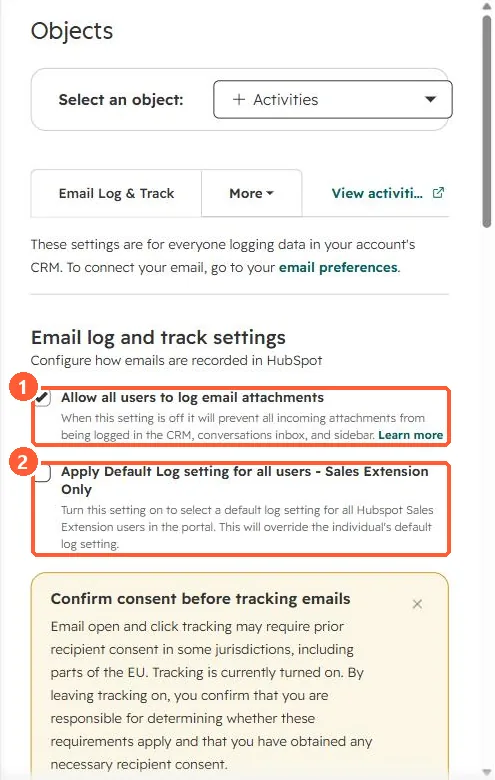

Short answer
Install the HubSpot Sales Chrome extension for Gmail or the Outlook add-in to log and track emails from your inbox. Admins can turn on Apply Default Log setting for all users - Sales Extension Only in Settings, Objects, Activities, Email Log & Track. HubSpot's KB notes tracking and logging do not work with customized Gmail layouts, and attachments over 50 MB do not log.
1. Account settings
In my demo portal, Email Log & Track has the attachment setting and the extension-wide default.


2. Per-user control
- Users can turn tracking and logging off for a message, contacts or domains.
- Use a never-log list for internal domains. See the never log list.
3. Related
Open notifications and log and track settings.